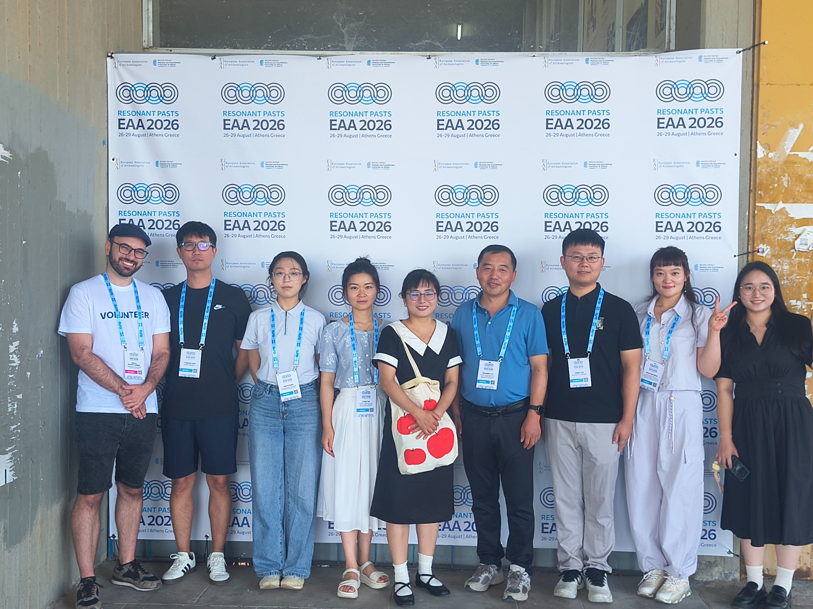
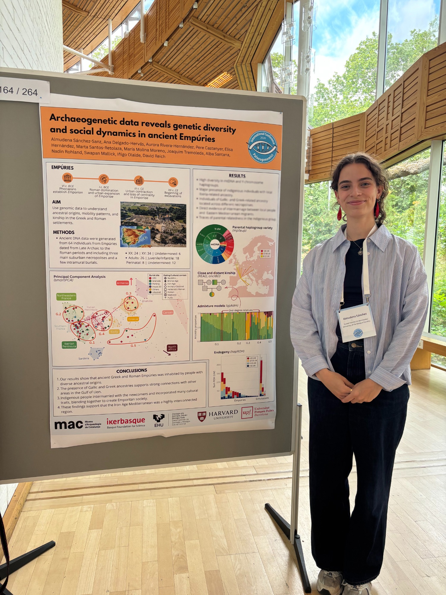

Presentación en congreso
Atenas

Shared ancestry across religious boundaries in medieval Córdoba, Spain
32nd Annual Meeting of the European Association of Archaeologists (EAA)
Sesión: Community in Context: Integrating Archaeological and Biomolecular Evidence from Medieval Cemeteries
Diego Esteve-Gómez
Póster en congreso
Estocolmo

Archaeogenetic data reveals genetic diversity and social dynamics in ancient Empúries
International Conference on Palaeogenomics (ICP 2026)
Universidad de Estocolmo · Centro de Paleogenética
Almudena Sánchez-Sanz
Conferencia de divulgación
Ataun
Vida y muerte en las sociedades megalíticas vascas: una mirada a nuestro pasado a través del ADN antiguo
Curso de verano: La aportación de José Miguel de Barandiaran a la Arqueología, Etnografía y Mitología Vasca IV
Universidad del País Vasco
Iñigo Olalde
Conferencia de divulgación
Donostia-San Sebastián
Revolución arqueogenética y organización social en la Prehistoria
XXIV Jornadas de Arqueología de Aranzadi
Aranzadi Zientzi Elkartea
Iñigo Olalde
Conferencia de divulgación
Madrid
Identidad, demografía e interacciones sociales en la maqbara de la Plaza del Castillo (Pamplona, Navarra)
Actualidad de la investigación arqueológica en España VII (2025-2026)
Museo Arqueológico Nacional
Vanessa Villalba-Mouco · Patxuka de Miguel Ibáñez · Iñigo Olalde
Conferencia de divulgación
Vitoria-Gasteiz
Epidemia en Álava hace 3300 años. Recuperando el genoma de patógenos prehistóricos
Ciclo de conferencias Lecturas de la Antigüedad. Catástrofes y calamidades en el mundo antiguo
Instituto de Ciencias de la Antigüedad (UPV/EHU)
Iñigo Olalde
Conferencia de divulgación
Gernika
La revolución de la arqueogenética: nuevas evidencias sobre organización social en la Prehistoria
XXVII Jornadas de Arqueología de Urdaibai
Asociación de Arqueología AGIRI
Iñigo Olalde
Conferencia de divulgación
Ataun
La genética y el origen de los vascos: entre el mito y la ciencia
Curso de verano: La aportación de José Miguel de Barandiaran a la Arqueología, Etnografía y Mitología Vasca III
Universidad del País Vasco
Iñigo Olalde
Ponencia en congreso
Turín
Patrilineality and female exogamy in a Late Chalcolithic mountain community at the Eastern Pyrenees
11th International Symposium on Biomolecular Archaeology (ISBA11)
Sesión: Identities I
Núria Puig i Riera
Conferencia de divulgación
Madrid
La arqueogenética como nueva herramienta para estudiar nuestro pasado: cambios demográficos y organización social durante el primer milenio a.C.
Actualidad de la investigación arqueológica en España VI (2024-2025)
Museo Arqueológico Nacional
Iñigo Olalde
Conferencia de divulgación
Vitoria-Gasteiz
Aquí hay tomate: enredos familiares hace 6000 años
Pint of Science Vitoria-Gasteiz
Pint of Science Festival
Iñigo Olalde
Conferencia de divulgación
Vitoria-Gasteiz
La revolución del ADN antiguo: una nueva herramienta para reconstruir la historia de las poblaciones humanas
Ciclo de conferencias
Alavesia: Asociación de amigos del museo de ciencias naturales de Álava
Iñigo Olalde
Conferencia de divulgación
Bilbao
Ancient DNA: a new tool to reconstruct human population history
JAKIN-MINA
Jakiunde, Academia de las Ciencias, de las Artes y de las Letras
Iñigo Olalde
Conferencia de divulgación
San Sebastián
Sálvame prehistórico: enredos familiares hace 6000 años
Passion for Knowledge
Donostia International Physics Center (DIPC)
Iñigo Olalde